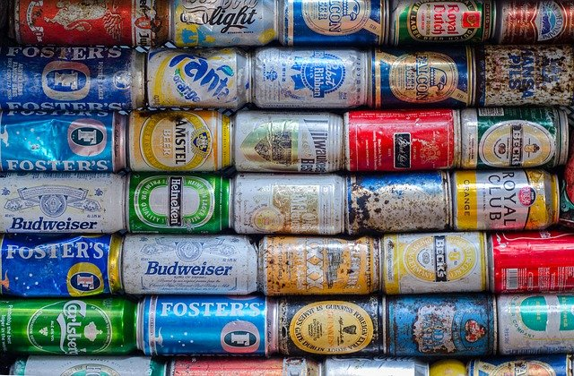

캔 류
캔 배출방법

- 금속캔과 고철류는 따로 배출해야합니다.
- 내용물을 완전히 비우고 물로 헹군 다음 배출해야합니다.
- 플라스틱 뚜껑 등 다른 재질 부분은 제거해서 분리배출합니다.
- 고무나 플라스틱이 부착되어 있거나 페인트통, 폐유통 등 유해 물질이 묻어있는 통은 재활용이 불가능합니다.
- 철캔, 알루미늄 캔
- 1. 내용물을 비워줍니다.
- 2. 가능한 압착합니다.
- 3. 깨끗이 씻은 후 배출합니다.
- TIP. 담배꽁초 등 이물질을 넣으면 안됩니다.
- 부탄 가스, 살충제 용기
- 1. 구멍을 뚫어줍니다.
- 2. 내용물을 비운 후 배출합니다.
- TIP. 가스용기는 가급적 통풍이 잘 되는 장소에서 내용물을 완전히 제거 후 배출합니다.